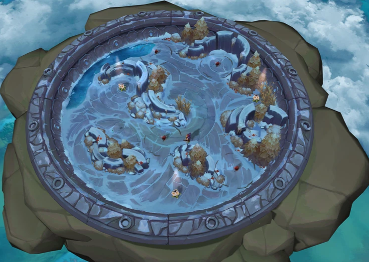
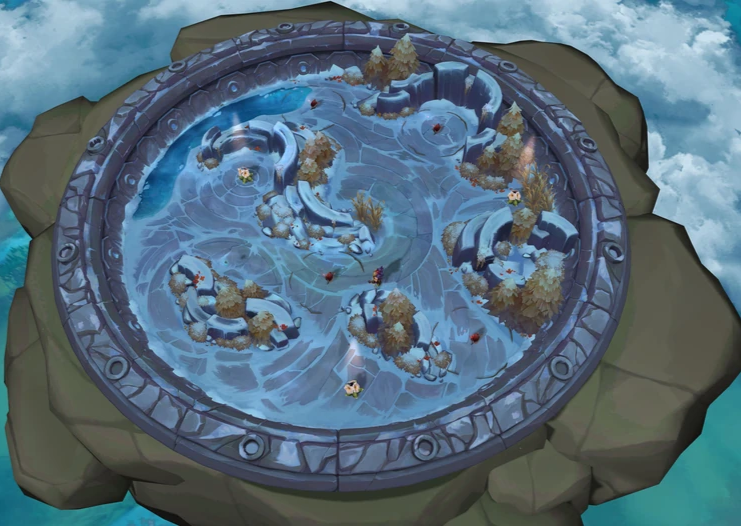

News
Hwei, The Virtuoso, Joins the Rift!
The newest champion to grace the battlefield is Hwei, The Virtuoso! This flamboyant fighter wields a brush infused with magical paint, unleashing a symphony of creative chaos upon his enemies. Check out his official champion trailer and abilities rundown for a glimpse of his artistic approach to combat.
Season 2024 Gameplay Teaser Hints at Danger!
Riot Games recently dropped a short teaser for Season 2024, and it depicts a dark and foreboding atmosphere. With lightning crackling and monstrous figures lurking in the shadows, players are left to wonder what challenges await them in the new season. Brace yourselves for an exciting, yet perilous journey!
TFT Mobile Launches in APAC!
Good news for TFT fans in the Asia-Pacific region! TFT Mobile is officially launching on November 22nd, allowing you to enjoy the strategic excitement of Teamfight Tactics wherever you go. Get ready to build your team, outsmart your opponents, and climb the ranked ladder from the palm of your hand.
The map
The map of League of Legends is called the Rift. It is a symmetrical map that is divided into three lanes: top, mid, and bottom. Each lane has three towers that the teams must destroy in order to reach the enemy's Nexus, which is located in their base. The Nexus is the main objective of the game, and the first team to destroy it wins the match.
 
